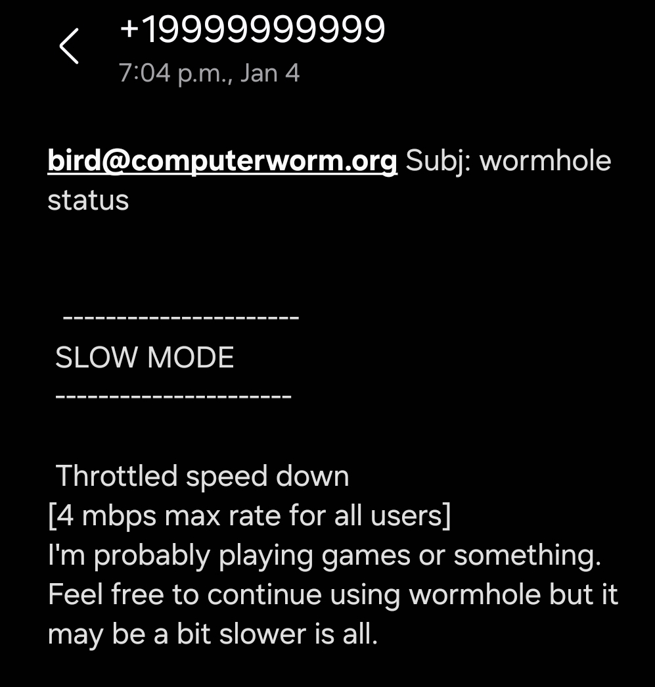

wormholeThrottle.sh
networking
This is a script I wrote to manage network speeds and connections to my server, it uses linux's tc (traffic control) utility that basically tells the linux kernel packet schedueler how it should be configured.
My heaviest files (1080p movies) average about 4 MB/s of data leaving my server in order for users to have no buffering, but it does spike up and down. Unfortuneatly with my current internet service I only get 20 mbps upload speeds. Normally I don't notice if 2 people are streaming at once but if I try to play certain games I definetly do experience minor lag.
That was my reasoning for creating this script to easily throttle down my servers upload speed if it begins to interfere with what I am doing.
very handy and simple to use instead of remembering the specific tc command and configuration. I am still playing with the limit I have set. 8mbps seems to work well so far, I tried my more resource intensive activities like gaming and I didn't notice any lag.
Additionally you set the burst and latency, which to be honest I'm a bit unsure how it all affects it. But I can keep fiddling with it till I find the best balance
At the bottom half of the script you see it prompts me on whether or not I would like to notify my users on the servers status. (is it throttled/normal/offline/online). This is just the stmplib python library I use in my other projects for sending sms text through telecom companys email 'gateways' [@msg.telus.ca] etc.

Works like a charm. Something I'm also considering is instead of a text alert for status's I will just change the css on my login page. Like have a little notification there when people try to log in. Or maybe do a combo of the login css and also a text for only users who are currently logged in. Feel like itd be less annoying for people that way than automated text spam lol